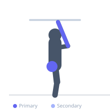

Exercise guide / Forearm Roller
Forearm Roller
The forearm roller is a forearm conditioning exercise that uses a weighted cylinder attached to a rope or cord, which is wound up and then unwound by alternating wrist flexion and extension. It simultaneously trains both the wrist flexors and wrist extensors through the full range of motion against continuous resistance. Because of the extended time under tension, it produces significant forearm hypertrophy and grip endurance improvements that are difficult to replicate with other exercises.
Primary muscles
flexor carpi radialis
flexor carpi ulnaris
extensor carpi radialis
Secondary muscles
brachioradialis
Stabilizers
deltoid anterior
Equipment


Starting position
- Hold the roller handle with both hands using an overhand grip, arms extended straight out in front at shoulder height. The weight hangs from the rope beneath the roller.
Setup
- A forearm roller is a short bar or cylinder with a rope through its center attached to a weight plate. Begin with a very light plate (2.5–5 kg) as the sustained tension is significantly more challenging than it appears.
Steps
- Step 1: Hold the roller at arm's length in front of the body at shoulder height. Weight hangs beneath on the rope.
- Step 2: Alternate wrist flexion on each hand to wind the rope upward, lifting the weight toward the bar.
- Step 3: Continue winding until the weight reaches the bar (rope fully wound).
- Step 4: Reverse the direction, alternating wrist extension on each hand to lower the weight back to the starting position in a controlled manner.
Coaching cues
- Arms stay straight out — your shoulders will burn too, and that is part of the work
- Wind all the way up and all the way down — no shortcuts
Breathing
- Breathe continuously — do not hold the breath. Use short rhythmic breaths throughout the extended set.
Range of motion
- Wind fully upward until the weight touches the bar; unwind fully downward until the rope is extended.
Tempo
- Continuous alternating motion — no specific tempo; controlled throughout
Common mistakes
- Starting with too much weight — the sustained isometric hold fatigues the shoulders and forearms very quickly
- Letting the arms drop below shoulder height partway through the set, reducing forearm engagement
Safety
- Keep the arms at shoulder height throughout — if they drop significantly, the set is over
- Stop if sharp elbow or wrist pain is felt
Training
- endurance: 1–3 reps
- endurance: 2–4 sets
- Rest: {'endurance': 90}